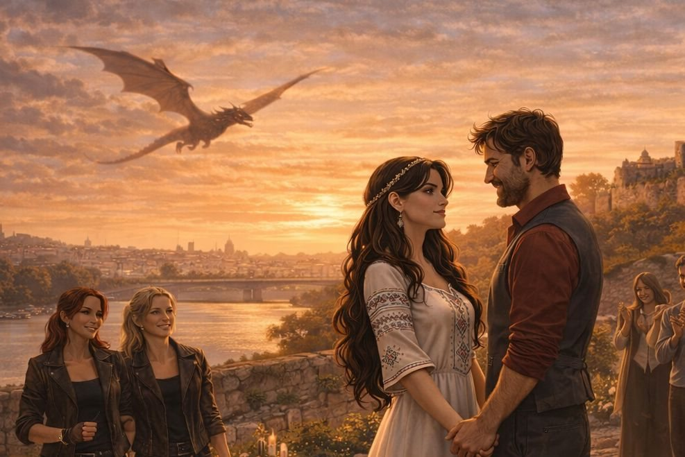

Поглавље 22: Предлог за брак
Página individual del capítulo con lectura y ejercicios.

Луис и Наташа седе у стану, након што су се помирили након инцидента са Софијом. Луис је пуним осећања и одлучује да јој отвори своје срце.
"Наташа," почиње Луис, гледајући је пуним љубави, "желим да знаш да сам дубоко заљубљен у тебе. Ти си све за мене."
Наташа га гледа пуним очима, али пре него што он може да настави, она га прекида. "Луис, јеси ли спреман да ме учиниш својом супругом?"
Луис је изненађен. Није био спреман за овако директно питање. Али када погледа у њене плаве очи, пуним интензитета и страсти, осећа како му се срце топи.
"Да, Наташа," одговара он, иако је мало збуњен. "Желим да будемо заједно заувек."
Наташа се осмехне, пуним задовољства. "Онда ми предложи брак у Саборној цркви Светог Архангела Михаила. То је најлепша црква у Београду, и желим да се то догоди тамо."
Луис кима, иако је мало збуњен брзином њених захтева. "Добро, Наташа. Учинићу то. Али желим да буде савршено."
Наташа га љуби у образ. "Знао сам да ћеш пристати. Ти си мој, Луис, и никад те нећу пустити."
Луис је гледа, осећајући мешавину љубави и узбуђења. Зна да је њихова веза јача од икада, али и да су пред њима велики изазови.
Крај двадесет другог поглавља.